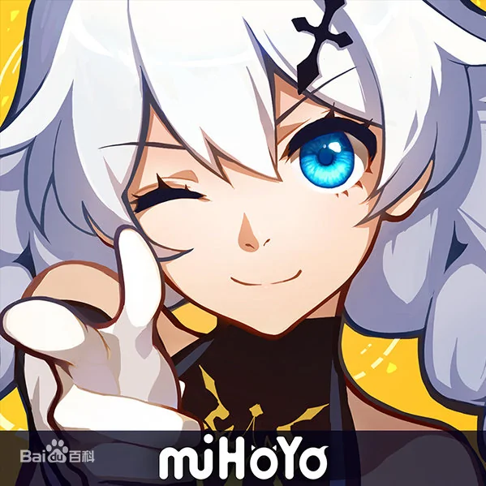

|  |
|
|
二次元文化一直不为很多人理解，认为都是虚拟的世界和任务，但大伟哥认为，“我们的现实生活正因为有了虚拟世界那一部分，才变得更美好，能够让你去经历那些你在现实生活中所不能经历的人和事情，这个体验其实是能够丰富我们自己的人生阅历的。 |
||
从崩坏学园到崩坏三再到原神，一路坎坷，米哈游初心不改，致力于打造一个属于二次元的世界，让人们在虚拟世界中也能获得快乐。 崩坏三中姬子曾说过一句话“去把这个不美好的世界，变成你想要的样子吧”，这句话是告诉玩家，也是告诉公司的员工，毫无疑问，米哈游正在一步步的对世界造成影响，而这影响也不止于游戏，从衍生品、《眷思量》到脑机接口和火箭，米哈游都有过投资，而他们，正以自己的方式改变着世界。 |
||
返回主页 |